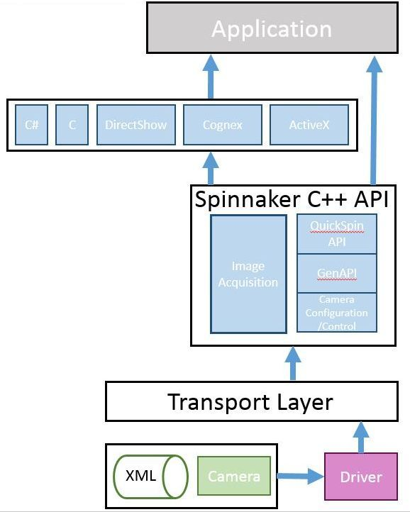
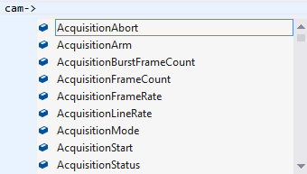
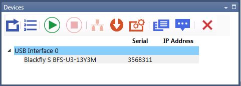

C# Programmer's Guide Contents
Fundamentals of Spinnaker
Architecture of Spinnaker
Examples
Nodes
QuickSpin API
C# Graphical User Interface API
Camera XML
Recommended Development Environment
Instantiate a Single Camera and Multiple Cameras
Popular Features in Spinnaker
Enumeration
Asynchronous Hardware Triggering
Setting Black Level
Setting Exposure Time
Setting Gain
Setting Gamma
Setting White Balance
Accessing Raw Bayer Data
Setting Number of Software Buffers
Basic Features
Event Handling
Grabbing Images
Error Handling
Advanced Features
Chunk Data
Sequencer
Logic Block
Logging
User Set
Architecture of Spinnaker API
Spinnaker API is built around the GenICam standard, which offers a generic programming interface for various cameras and interfaces. Spinnaker is an extension of GenAPI. Spinnaker provides quick and easy access to your camera.
Spinnaker API includes two major components:
Image Acquisition
This is the acquisition engine that is responsible for setting up image buffers and image grabbing.
Camera Configuration
This is the configuration engine that is responsible for controlling your camera. This component consist of quick spin API, which is a wrapper that makes GenAPI easy to use.

Examples
Included with the Spinnaker SDK are a number of source code examples to help you get started. These examples are provided for C, C++, C#, and VB.NET languages and are precompiled for your convenience.
The table below describes the available Spinnaker SDK examples.
| Spinnaker Example
|
Description
|
| Acquisition |
Enumerate, start acquisition, and grab images |
| AcquisitionMultipleCamera |
How to capture images from multiple cameras simultaneously |
| ChunkData |
How to get chunk data on an image, either from the nodemap or from the image itself |
| DeviceEvents |
Create a handler to access device events |
| Enumeration* |
Enumerate interfaces and cameras |
| EnumerationEvents |
Explore arrival and removal events on interfaces and the system |
| Exposure* |
Configure a custom exposure time |
| ImageEvents |
Image events shows how to acquire images using the image event handler. |
| ImageFormatControl* |
Configure a custom image size and format |
| Logging |
Create a logging event handler |
| LookupTable |
Configure lookup tables for the customization and control of individual pixels |
| NodeMapCallback |
Create, register, use, and unregister callbacks |
| NodeMapInfo |
How to retrieve node map information |
| SaveToAVI |
Save images in AVI format |
Sequencer
(Blackfly S only) |
Capture multiple images with different parameters in a sequence |
| SpinSimpleGUI_MFC |
Graphical User Interface for evaluating and setting camera parameters |
| Trigger* |
Trigger shows how to trigger the camera. |
| *Also available in QuickSpin |
|
Nodes
Every GenICam compliant camera has an XML description file.
The XML describes camera features, their interdependencies, and all
other information like availability, access control, and minimum and maximum values. These features include Gain, Exposure Time, Image Format, and others. The elements of a camera description file are
represented as software objects called Nodes. A Node map is a list of
nodes created dynamically at run time.

To access camera properties such as setting image width:
| C# GenAPI |
NodeMap map = cam.GetNodeMap();
IInteger width = map.GetNode<IInteger>("Width");
width.Value = 320;
|
QuickSpin API and Accessing Camera Parameters
Generic programming with GenICam requires developers to know feature names before using them. Spinnaker
provides the QuickSpin API, which requires fewer lines of code and allows you to make use of auto completion. The QuickSpin API consists of a list of static functions integrated
into the Camera class.
All camera parameters can be accessed through the camera pointer object.

Most camera parameters (all items in camera.h) can be accessed using the QuickSpin API.
For parameters not handled by QuickSpin API, you can access them via GenICam API (GenAPI). GenAPI is the generic programming interface for configuring all kinds of cameras. GenAPI is maintained by the European Machine Vision Association.
Below is an example comparison of inquiring camera gain via GenAPI and QuickSpin API.
| C# GenAPI |
INodeMap map = cam.GetNodeMap();
IFloat GainNode = map.GetNode<IFloat>(
"Gain");
|
| C# QuickSpin API |
doublequickGainVal = cam.Gain.Value;
|
C# Graphical User Interface API
For applications that want to take advantage of Spinnaker's
graphical user elements, graphical user interface (GUI) controls are available.
GUI controls are divided into static and dynamic categories. Static GUI controls
include the CameraSelectionDialog, display window, and property grid window.
The GUI dynamically loads the camera's features from the firmware. Therefore,
new firmware has the ability to add GUI controls to the same application,
without recompiling.
|
Static GUI Dialogs
|
|
//To show image drawing window
GUIFactory AcquisitionGUI = new GUIFactory ();
AcquisitionGUI.ConnectGUILibrary(cam);
ImageDrawingWindow AcquisitionDrawing = AcquisitionGUI.GetImageDrawingWindow();
AcquisitionDrawing.Connect(cam);
AcquisitionDrawing.Start();
AcquisitionDrawing.ShowModal();
|

|
|
//To show camera selection window
GUIFactory AcquisitionGUI = newGUIFactory ();
AcquisitionGUI.ConnectGUILibrary(cam);
CameraSelectionWindow camSelection =
AcquisitionGUI.GetCameraSelectionWindow();
camSelection.ShowModal(true);
|

|
|
//To show property grid window
GUIFactory AcquisitionGUI = new GUIFactory ();
AcquisitionGUI.ConnectGUILibrary(cam);
PropertyGridWindow propWindow =
AcquisitionGUI.GetPropertyGridWindow();
propWindow.Connect(cam);
propWindow.ShowModal();
|

|
|
Dynamic GUI Control
|
|
GUIFactory dynamicGUI = new GUIFactory ();
dynamicGUI.ConnectGUILibrary(cam);
// Get dialog name via
dynamicGUI.GetDialogNameList()
Window dlg =
dynamicGUI.GetDialogByName(dialogName);
dlg.Owner = Window .GetWindow(this );
dlg.Show();
|

|
Camera XML
The camera's XML file contains information such as feature naming, register mapping, and dependencies between features. It is typical for GenICam-compliant software to cache the XML file for quicker access to the camera's definition. Spinnaker caches the XML file in a binary format to achieve better performance.
Camera XML files are located in:
C:\ProgramData\Spinnaker\XML
Recommended Environment
Spinnaker supports the following list of operating systems and development environments.
|
OS
Compatibility
(32- and
64-bit)
|
Windows XP
Windows 7
Windows 8.1
Windows 10
|
|
Language
Support
|
C
C++
C#
VB.NET
|
|
Compiler
Support
|
Visual Studio 2010
Visual Studio 2013
Visual Studio 2015
|
|
Interface
Support
|
USB3 Vision 1.0
|
Instantiate Cameras
Before you can instantiate a camera, you must create and initialize a system object. The System Singleton object is used to retrieve the list of interfaces (USB 3.1 or GigE) and cameras available. You must call ReleaseInstance() at the end of your program to free up the system object.
Multiple cameras can only be instantiated one at a time.
| Instantiate multiple cameras (C#) |
ManagedSystem system = new ManagedSystem();
// Get a list of cameras available on the system
IList<IManagedCamera> camList = system.GetCameras();
foreach (ManagedCamera cam in cameraList)
{
cam.Init();
}
system.Dispose();
|
Enumeration
The snippet below detects the number of cameras connected and enumerates them from an index.
| Spinnaker C# GenAPI |
IList<IManagedCamera> camList = system.GetCameras();
foreach (IManagedCamera managedCamera in camList)
using (managedCamera)
{
managedCamera.Init();
}
|
Asynchronous Hardware Triggering
The snippet below does the following:
- Enables Trigger Mode
- Configures GPIO0/Line0 as the trigger input source
- Specifies the trigger signal polarity as an active high (rising edge) signal
|
Spinnaker C# QuickSpin API |
cam.TriggerMode.Value = TriggerModeEnums.On.ToString();
cam.TriggerSource.Value = TriggerSourceEnums.Line0.ToString();
cam.TriggerSelector.Value = TriggerSelectorEnums.FrameStart.ToString();
cam.TriggerActivation.Value = TriggerActivationEnums.RisingEdge.ToString();
|
|
Spinnaker C# GenAPI |
IEnum triggerMode = nodeMap.GetNode<IEnum>("TriggerMode");
triggerMode.Value = "On";
IEnum triggerSource = nodeMap.GetNode<IEnum>("TriggerSource");
triggerSource.Value = "Line0";
IEnum triggerSelector = nodeMap.GetNode<IEnum>("TriggerSelector");
triggerSelector.Value = "FrameStart";
IEnum triggerActivation = nodeMap.GetNode<IEnum>("TriggerActivation");
triggerActivation.Value = "RisingEdge";
|
Setting Black Level
BlackLevel is the GenICam feature that represents the DC offset that is applied to the video signal. This example compares the mechanism used to set this feature in both environments.
| Spinnaker C# QuickSpin API |
// Black Level is also referred to as brightness
cam.BlackLevelSelector.Value = BlackLevelSelectorEnums.All.ToString();
// Set Black Level to an absolute value of 1.5%
cam.BlackLevel.Value
= 1.5;
|
| Spinnaker C# GenAPI |
IEnum blackLevelSelector = nodeMap.GetNode<IEnum>("BlackLevelSelector");
blackLevelSelector.Value = "All";
IFloat blackLevel = nodeMap.GetNode<IFloat>("BlackLevel");
blackLevel.Value = 1.5;
|
Setting Exposure Time
ExposureTime refers to the amount of time that the camera's electronic shutter stays open. This example sets your camera's exposure/shutter time to 20 milliseconds.
| Spinnaker C# QuickSpin API |
// Turn off auto exposure
cam.ExposureAuto.Value
= ExposureAutoEnums.Off.ToString();
// Set exposure mode to "Timed"
cam.ExposureMode.Value
= ExposureModeEnums.Timed.ToString();
// Set exposure to 20000 microseconds
cam.ExposureTime.Value
= 20000;
|
| Spinnaker C# GenAPI |
IEnum exposureAuto = nodeMap.GetNode<IEnum>("ExposureAuto");
exposureAuto.Value = "Off";
IEnum exposureMode = nodeMap.GetNode<IEnum>("ExposureMode");
exposureMode.Value = "Timed";
IFloat exposureTime = nodeMap.GetNode<IFloat>("ExposureTime");
exposureTime.Value = 20000;
|
Setting Gain
The following code snippet adjusts gain to 10.5 dB.
| Spinnaker C# QuickSpin API |
//Turn auto gain off
cam.GainAuto.Value = GainAutoEnums.Off.ToString();
//Set gain to 10.5 dB
cam.Gain.Value = 10.5;
|
| Spinnaker C# GenAPI |
IEnum gainAuto = nodeMap.GetNode<IEnum>("GainAuto");
gainAuto.Value = "Off";
IFloat gainValue = nodeMap.GetNode<IFloat>("Gain");
gainValue.Value = 10.5;
|
Setting Gamma
The following code snippet adjusts gamma to 1.5.
| Spinnaker C# QuickSpin API |
// Set the absolute value of gamma to 1.5
cam.Gamma.Value =
1.5;
|
| Spinnaker C# GenAPI |
IFloat gamma = nodeMap.GetNode<IFloat>("Gamma");
gamma.Value = 1.5;
|
Setting White Balance
The following code snippet adjusts the white balance's red and blue channels.
| Spinnaker C# QuickSpin API |
// Set auto white balance to off
cam.BalanceWhiteAuto.Value
= BalanceWhiteAutoEnums.Off.ToString();
// Select blue channel balance ratio
cam.BalanceRatioSelector.Value
= BalanceRatioSelectorEnums.Blue.ToString();
// Set the white balance blue channel to 2
cam.BalanceRatio.Value
= 2;
|
| Spinnaker C# GenAPI |
IEnum balanceWhiteAuto = nodeMap.GetNode<IEnum>("BalanceWhiteAuto");
balanceWhiteAuto.Value = "Off";
IEnum balanceRatioSelector = nodeMap.GetNode<IEnum>("BalanceRatioSelector");
balanceRatioSelector.Value = "Blue";
IFloat balanceRatio = nodeMap.GetNode<IFloat>("BalanceRatio");
balanceRatio.Value = 2;
|
Accessing Raw Bayer Data
Raw image data can be accessed programmatically via the getData method of the Spinnaker Image class. In 8 bits per pixel modes such as BayerRG8, the first byte represents the pixel at [row 0, column 0], the second byte at [row 0, column 1], and so on. The top left corner of the image data represents row 0, column 0.
Spinnaker
C# API |
Unsafe
{
byte* data = rawImage.data;
// Assuming image is 640
x 480 resolution with bayer tile RGGB
// data represents row 0 column 0, red
pixel (R)
// data + 1 represents row 0 column 1,
green pixel (G)
// data + 640 represents row 1 column 0,
green pixel (G)
// data + 641 represents row 1 column 1,
blue pixel (G)
}
|
Setting Number of Image Buffers
The following code snippet adjusts the number of image buffers that the driver initializes for buffering images on your PC to 11 (default is 10).
| Spinnaker C# API |
INodeMap sNodeMap = cam.GetStreamNodeMap();
IInteger streamNode = sNodeMap.GetNode<IInteger>("StreamDefaultBufferCount");
long bufferCount = streamNode.Value;
streamNode.Value = 11;
|
Event Handling
Spinnaker introduces two event classes: interface events and
device events.
Interface Event
The interface event class is a new feature that is responsible for
registering and deregistering user defined interface events such as device
arrival and removal.
| Interface Event C# |
class InterfaceEventListener :
ManagedInterfaceEvent
{
protectedoverridevoid OnDeviceArrival()
{
Console .Out.WriteLine( "A new device has arrived!" );
}
protected override void OnDeviceRemoval( UInt64 serialNumber)
{
Console.Out.WriteLine( "A device with serial number {0} has been removed!" ,
serialNumber);
}
}
|
Device Event
The device event class is responsible for registering and
deregistering user defined device events such as start or end of exposure.
| Device Event C# |
// Set EventSelector to ExposureEnd
cam.EventSelector.Value =
EventSelectorEnums .EventExposureEnd.ToString();
// Set EventNotification to true
cam.EventNotification.Value = EventNotificationEnums .On.ToString();
// After registering the below device event on the camera, OnDeviceEvent will be automatically called once ExposureEnd event is detected
classManagedDeviceEventHandler : ManagedDeviceEvent
{
protected override voidOnDeviceEvent( string eventName)
{
Console .Out.WriteLine( "Got Device Event with Name=" + eventName + " and ID= {0}" , GetDeviceEventId());
}
}
|
Grabbing Images
You can grab images using the GetNextImage() function. This function returns an image pointer for the current image. The image pointer should be released whenever you are done with the image. Image pointer, being a smart pointer, is automatically released when set to null or when out of scope.
| Image Acquisition
(C#) |
// Begin capturing images
cam.BeginAcquisition();
// Retrieve an image
ManagedImage rawImage = cam.GetNextImage();
// Release image
rawImage.Release();
|
Grab Result
In almost all cases, you should check to see if the grabbed image has any errors. To do so, you need to call getImageStatus().
| To check for errors in the image (C#) |
ImageStatus imageStatus = rawImage.ImageStatus;
|
| Available error enums |
/** Status of images returned from GetNextImage() call. */
enum ImageStatus
{
IMAGE_NO_ERROR = 0,
/**< Image is returned from GetNextImage() call without any errors. */
IMAGE_CRC_CHECK_FAILED,
/**< Image failed CRC check. */
IMAGE_INSUFFICIENT_SIZE,
/**< Image size is smaller than expected. */
IMAGE_MISSING_PACKETS,
/**< Image has missing packets */
IMAGE_LEADER_BUFFER_SIZE_INCONSISTENT,
/**< Image leader is incomplete. */
IMAGE_TRAILER_BUFFER_SIZE_INCONSISTENT,
/**< Image trailer is incomplete. */
IMAGE_PACKETID_INCONSISTENT,
/**< Image has an inconsistent packet id. */
IMAGE_DATA_INCOMPLETE,
/**< Image data is incomplete. */
IMAGE_UNKNOWN_ERROR
/**< Image has an unknown error. */
};
|
Error Handling
Spinnaker C# uses SpinnakerException class for exception handling.
| Spinnaker C# API |
Try
{
cam.Init();
}
catch ( SpinnakerException ex)
{
}
|
Chunk Data
Chunk data is extra information that the camera can append
to each image besides image data. Examples of chunk data include frame counter,
image width, image height and exposure time.
For a listing of chunk data information supported by your camera, please refer to the camera's Technical Reference manual.
An image is comprised of:
- Leader
- Image Data
- Chunk Information (i.e., gain, exposure, image size)
- Trailer
| C# Enable Chunk Data |
cam.ChunkSelector.Value =
ChunkSelectorEnums.ExposureTime.ToString();
cam.ChunkEnable.Value = true;
cam.ChunkModeActive.Value = true;
|
| C# Retrieve Chunk Data |
String currentExposure = rawImage.ChunkData.ExposureTime.ToString();
|
Sequencer
The purpose of a sequencer is to allow you to programmatically control the acquisition parameters of an image sequence. You can define not only how the images are captured (i.e. the camera feature settings) but also when the camera transitions from one acquisition setting to another. This is akin to a state machine diagram where the states correspond to the sequencer set feature settings, and the transition among states corresponds to a particular event that triggers the state machine to move from one state to another.
To configure sequencer on your camera, you can use SpinView's sequencer tab. Or, to programmatically configure it, you can use the C++ Sequencer source code example that is installed along with Spinnaker SDK.
Logic Block
A Logic Block is a collection of combinatorial logic and latches that allows the user to create new, custom signals inside the camera. Each Logic Block is comprised of 2 lookup tables (LUT) with programmable inputs, truth tables and a flip flop output. There is a LUT for both the D input (Value LUT) and the enable input (Enable LUT) of the flip flop. Both LUTs have 3 inputs and thus have 8 configuration bits for their truth table.
For more information, see Using Logic Blocks.

Logging
Spinnaker supports five levels of logging:
- Error—failures that are non-recoverable (this is the default level)
- Warning—failures that are recoverable without user intervention
- Notice—information about events such as camera arrival or disconnect, camera initialize, camera start/stop, or modification of a feature
- Info—information about recurring events that are generated with every image
- Debug—information that can be used to troubleshoot the system
You can define the logging level that you want to monitor. Levels are inclusive, that is, if you monitor debug level error, you also monitor all logging levels above it.
For a complete C++ and C# example of Logging, please see Spinnaker SDK source code examples. By default, Spinnaker SDK's SpinView application saves all logging data to:
C:\ProgramData\Spinnaker\Logs
| Register Logging (C#) |
//
Register logging callback class
LogCallbackHandler callBackClass = newLogCallbackHandler();
system.RegisterLoggingEvent(callBackClass);
// Set
callback priority level
system.SetLoggingEventPriorityLevel(LoggingLevel);
classLogCallbackHandler
: ManagedLoggingEventHandler
{
publicoverridevoid OnLogEvent(ManagedLoggingEvent
loggingEvent)
{
...
}
}
|
User Set
User set is an on camera non-volatile memory space that you can use to store camera properties such as exposure and gain.
To check if user set supports the feature that you want to save, you can either query the User Set Feature Selector programmatically or run SpinView: